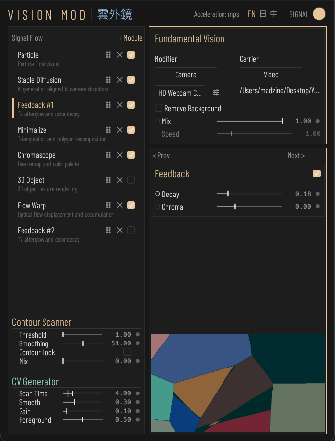
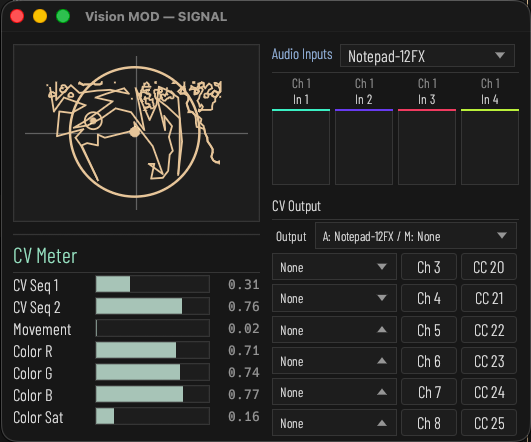
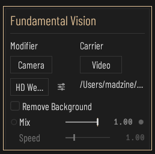
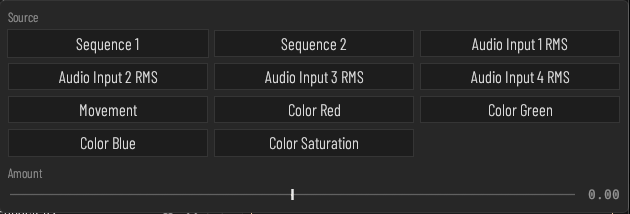

功能介紹
Vision MOD 是一款即時視覺合成器，把模組合成器 Complex Oscillator 的概念帶進視覺領域：Modifier 素材提供動態，Carrier 素材是被這動態承載的影像，以一段素材去調變另一段素材，產生新的影音現象。
訊號流由主視窗右側的模組面板定義，Fundamental Vision 鎖在第一站作為素材源頭，其後可自由加入、排序、bypass、刪除 Diffusion、Chromascope、Minimalize、3D Object、Particle、Flow Warp、Feedback 等模組，同一種模組可加入多份 instance 並各自獨立串接。
程式分析畫面輪廓與顏色、加上 4 軌音訊輸入的 RMS，產生 modulation signal 驅動內部參數，並可同時透過 CV Output 送出音訊介面與 MIDI 裝置（每路指定 CC#、14-bit），控制外部硬體。macOS 使用 Stable Diffusion 1.5 + ControlNet + Hyper-SD15 1-step LoRA，Windows 使用 Stream Diffusion + CUDA／TensorRT。核心以 Rust + wgpu + cpal 開發，macOS 走 Metal、Windows 走 DirectX 12，同源碼跨平台。






特色一覽
- 模組化訊號流，自由排序、可加入多個同種模組
- 畫面與音訊驅動的 modulation 系統
- macOS Stable Diffusion 1.5 / Windows Stream Diffusion
- SDF 3D Object、Particle、Chromascope、Flow Warp、Feedback
- CV／MIDI 輸出控制外部設備（14-bit）
- 跨平台 Rust + wgpu，macOS 與 Windows 同源碼
技術資訊
- 開發語言
- Rust
- 平台
- macOS, Windows
- 版本
- v0.6.1